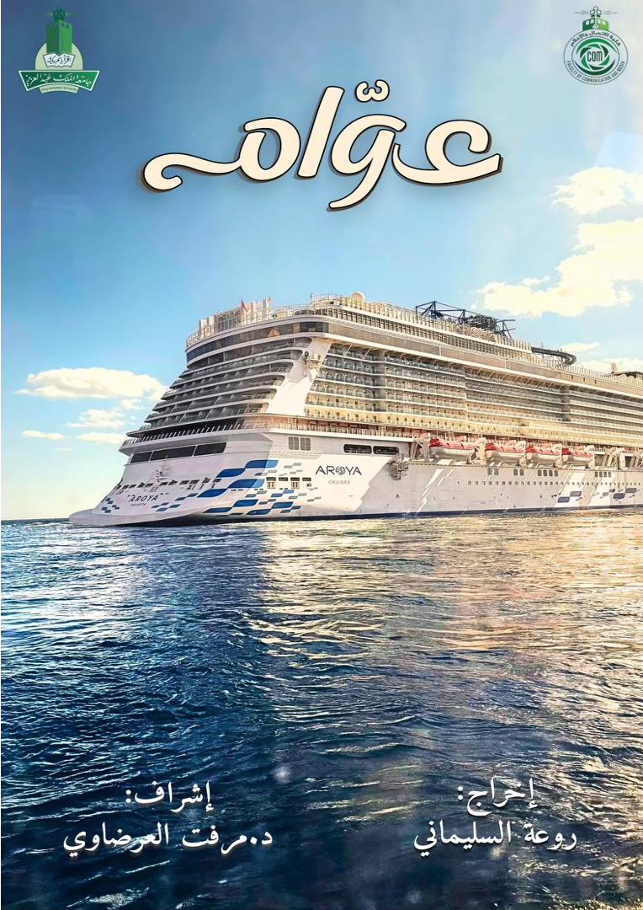

Hello, it's
Dr. Merfat Alardawi
I'm
My core research interests include the areas of drama, television, and film studies, with a particular interest in the relationship between drama and comparative cultural studies.